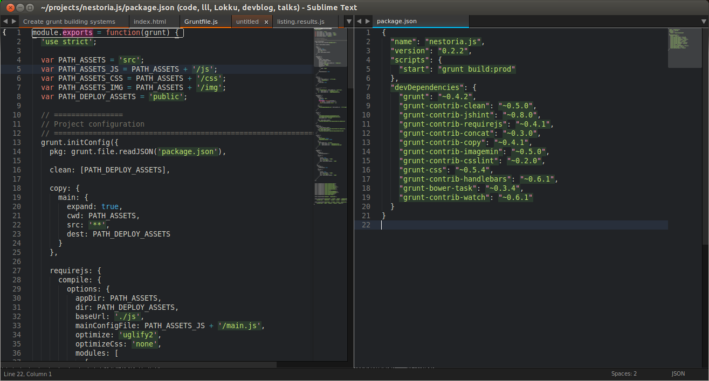
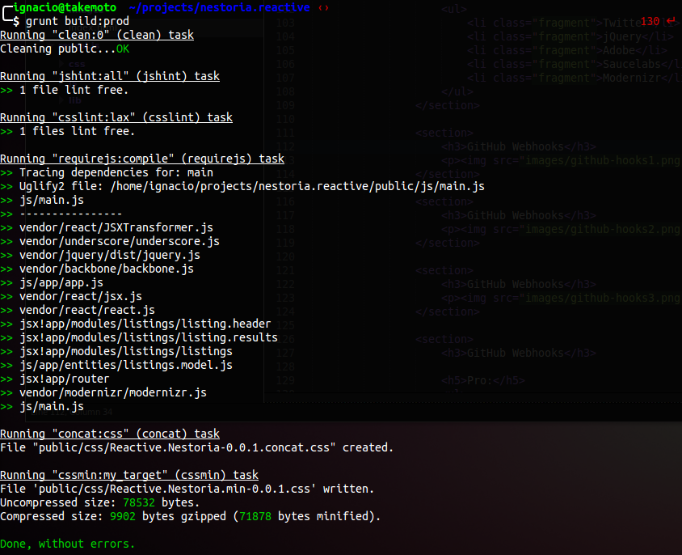

Automating development tasks using Grunt
Topics we'll cover today today:
- What is Grunt
- How do we use it
- How do we optimize it
- How can we use it in Nestoria
What's Grunt
Grunt is:
- Task runner (e.g: ant, rake, cake, gulp, .sh..)
- Built on top of Node.JS
- Easy to configure, non-restrictive, easy to use
Configuration files:
Facts about Grunt:
- 7700 stars on github
- 900 forks
- 44 contributors
Almost the same amount of stars than Textmate/Symphony
And who's using it?
- jQuery
- Angular.js
- Adobe
- Saucelabs
- Modernizr
How it actually looks like..

But what can we do with it ?
EVERYTHING. Even pancakes.
Now, seriously..
- Linting documents (jshint, AriaLinter, csslint)
- Optimizing images
- Optimizing documents (concatenating js/css, minifying..)
- TESTS, TESTS, TESTS
- Automatically reload/rebuild on file change (watchers)
- Precompiling templates, less, sass, oocss, etc
- And much much more..
How do we actually use it?

Instalation is quite straight forward
# Install nodejs and npm
tar -zxf node-v0.10.26.tar.gz
cd node-v0.10.26
./configure && make && sudo make install
# Install grunt
sudo npm install -g grunt-cli
Basic grunt config
module.exports = function(grunt) {
'use strict';
// Set up grunt
};
Boring.. lets add some tasks..
Lets add a tasks for copying files..
Open Gist
module.exports = function(grunt) {
'use strict';
// Set grunt configuration object
grunt.initConfig({
pkg: grunt.file.readJSON('package.json'),
copy: {
main: {
expand: true,
cwd: PATH_ASSETS,
src: '**',
dest: PATH_DEPLOY_ASSETS
}
}
});
// Load npm tasks
grunt.loadNpmTasks('grunt-contrib-copy');
// Register current tasks
grunt.registerTask('default', 'build:dev');
grunt.registerTask('build:dev', ['copy']);
};
And also one for linting our JS files..
jshint: {
all: [
'Gruntfile.js',
PATH_ASSETS_JS + '/**/*.js',
'!' + PATH_ASSETS_JS + '/vendor/**/*.js',
]
},
...
grunt.loadNpmTasks('grunt-contrib-jshint');
And for linting our css files..
csslint: {
lax: {
rules: {
'box-sizing': false,
'adjoining-classes': false
},
src: [
PATH_ASSETS_CSS + '/*.css'
]
}
},
...
grunt.loadNpmTasks('grunt-contrib-csslint');
You see the pattern, right?
As we start to add more tasks our Gruntfile will become harder to maintain
NO
But how do we solve it ?
We modularize!
Taking advantage of the CommonJS modules from Node
So this:
Open Gist
csslint: {
lax: {
rules: {
'box-sizing': false,
'adjoining-classes': false
},
src: [
PATH_ASSETS_CSS + '/*.css'
]
}
},
jshint: {
all: [
'Gruntfile.js',
PATH_ASSETS_JS + '/**/*.js',
'!' + PATH_ASSETS_JS + '/vendor/**/*.js',
]
},
...
grunt.loadNpmTasks('grunt-contrib-csslint');
...
Becomes into:
Open Gist
module.exports = function(grunt) {
require('load-grunt-config')(grunt);
require('load-grunt-tasks')(grunt);
};
Much better uhg ?
Now we have to create the custom tasks:
If we set up a directory structure like this:
Project Directory
├── bower.json
├── Gruntfile.js
├── LICENSE
├── package.json
├── README.md
├── src
├── grunt-tasks
│ ├── jshint.js
│ ├── csslint.js
│ ├── copy.js
Then, the configuration objects can be defined as
module.exports = {
csslint: {
lax: {
rules: {
'box-sizing': false,
'adjoining-classes': false
},
src: [
PATH_ASSETS_CSS + '/*.css'
]
}
}
};
But how can we use it to improve Nestoria?
We could:
- Have a centralized configuration point for all the FE assets
- Compile less files, lint css, lint js
- Optimize assets, concatenate & minify
- Running our FE tests on multiple devices and getting the results on the Terminal
- Automatically reloading nestoria on the browser when an asset gets modified
- Making image sprites (but executing Savios perl module, since all of the others image sprites makers are crap)
- and much more..
This also opens the door for new things like:
- Lint our mason templates against the WAI-ARIA spec
- Optimization of AMD modules if we ever think about using them on our Front-End
- Getting metrics of our codebase (uncss, grunt-css-metrics)
That's all!
Ignacio Rivas
- @sabarasaba
- GitHub
- sabarasaba
- Web
- ignaciorivas.me